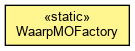

org.waarp.snmp
Class WaarpMOFactory
java.lang.Object
 org.waarp.snmp.WaarpMOFactory
org.waarp.snmp.WaarpMOFactory
public class WaarpMOFactory
- extends Object

This class creates and returns ManagedObjects
- Author:
- Frederic Bregier
|
Method Summary |
static WaarpMOScalar |
create(org.snmp4j.smi.OID oid,
Object value,
int type,
org.snmp4j.agent.MOAccess access,
WaarpMORow row,
int mibLevel,
int entry)
|
static WaarpMOScalar |
createReadOnly(org.snmp4j.smi.OID oid,
Object value,
int type,
WaarpMORow row,
int mibLevel,
int entry)
|
static org.snmp4j.smi.Variable |
getVariable(org.snmp4j.smi.OID oid,
Object value,
int type,
int mibLevel,
int entry)
Create a Variable using the arguments |
static void |
setVariable(org.snmp4j.smi.Variable var,
Object value,
int type)
Set a Variable value |
| Methods inherited from class java.lang.Object |
clone, equals, finalize, getClass, hashCode, notify, notifyAll, toString, wait, wait, wait |
factory
public static WaarpInterfaceVariableFactory factory
- To be setup to default Factory to be used or kept as null for default one
WaarpMOFactory
public WaarpMOFactory()
createReadOnly
public static WaarpMOScalar createReadOnly(org.snmp4j.smi.OID oid,
Object value,
int type,
WaarpMORow row,
int mibLevel,
int entry)
- Parameters:
oid - value - type -
- Returns:
- an MOScalar according to the argument
create
public static WaarpMOScalar create(org.snmp4j.smi.OID oid,
Object value,
int type,
org.snmp4j.agent.MOAccess access,
WaarpMORow row,
int mibLevel,
int entry)
- Parameters:
oid - value - type - access -
- Returns:
- an MOScalar according to the argument
getVariable
public static org.snmp4j.smi.Variable getVariable(org.snmp4j.smi.OID oid,
Object value,
int type,
int mibLevel,
int entry)
- Create a Variable using the arguments
- Parameters:
oid - value - type - mibLevel - entry -
- Returns:
- a Variable using the arguments
setVariable
public static void setVariable(org.snmp4j.smi.Variable var,
Object value,
int type)
- Set a Variable value
- Parameters:
var - value - type -
Copyright © 2009-2013 Waarp. All Rights Reserved.